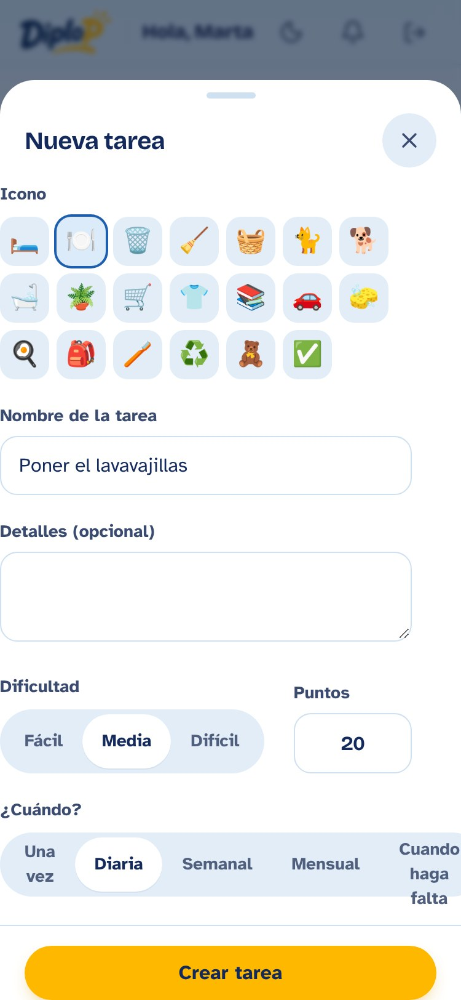
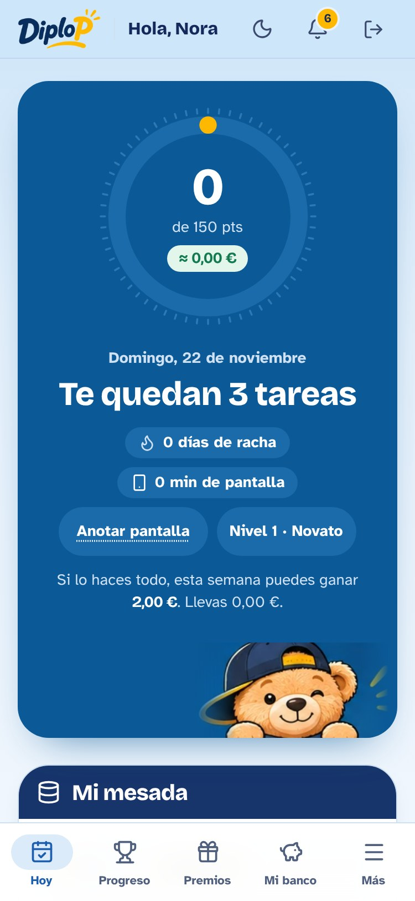

Pulsa Crear familia. Escribe el nombre de la familia, tu nombre, usuario, correo y una contraseña de 8 caracteres o más. Marca la casilla de privacidad y condiciones (también las aceptas por tus hijos).
En Más > Familia pulsa Añadir. Cada hijo tiene un usuario y un PIN de 4 cifras o más. Puedes invitar a otro adulto.
En Tareas pulsa Nueva. Elige nombre, puntos, cuándo se repite y a quién va.
En Ajustes elige cuánto vale un punto (por ejemplo, 100 puntos = 5 €) y si cierras por semana o por mes.
iPhone (Safari): Compartir > Añadir a pantalla de inicio.
Android (Chrome): menú de tres puntos > Instalar aplicación.
Que cada hijo entre con su usuario y PIN.
Crea premios en Premios. En Ajustes, pon un plan semanal de minutos de pantalla para cada hijo.


Abre DiploP, pulsa el círculo de la tarea. Si se equivoca, tiene unos segundos para Deshacer.
Te llega un aviso. En Validar:
Cada hijo ve sus puntos, su nivel, su racha y cuánto valen en euros. Los premios se canjean en Premios y tú los apruebas.
En Mesada: Cerrar semana convierte los puntos en euros. Luego pulsa Pagar, elige efectivo, Bizum o transferencia y confirma.
| Cuándo | Qué haces |
|---|---|
| Cada día | Mira Validar. El número rojo te dice cuántas tareas esperan. |
| Cuando pidan | Aprueba premios, retiros o minutos de pantalla. |
| Cada lunes | Cierra la semana en Mesada y paga. La pantalla se recarga sola a las 00:00 y lo que sobró caduca. |
| Si hace falta | Pon un Ajuste de pantalla (quitar minutos o una pausa) con un motivo en positivo. |